Elijah Geduldig
This site is designed for desktop and isn't quite ready for mobile yet.
Visit elijahgeduldig.com on a computer for the full experience, or expand your browser window
Website designed and built from scratch by Elijah Geduldig
During my time in college, I've built skills in experimental methods, statistical analysis, and high-level academic writing. Sociology and Applied Psychology at UCSB gave me a truly wide-ranging education within the social sciences, with course topics spanning cognitive development, global incarceration, social stratification, and much more. But what separates my experience from most undergraduates' is that I didn't just take classes and write short papers; I envisioned, planned, funded, and completed a 46-page original research project. This honors thesis, in tandem with my additional research experience, gave me the skills and confidence to successfully manage complex projects that require funding, study design, quantitative analysis, and extensive professional writing.
Millions of Americans now turn to ChatGPT for mental health support, yet almost no research has investigated how they're perceived for it. I designed a nationally representative survey experiment (N = 435) and found that ChatGPT occupies a "middle ground," reducing stigma compared to doing nothing, but not closing the gap with therapy. This suggests that, while LLMs may serve as a low-threshold entry point into mental health care, they do not fundamentally reshape broader patterns of mental health stigma.
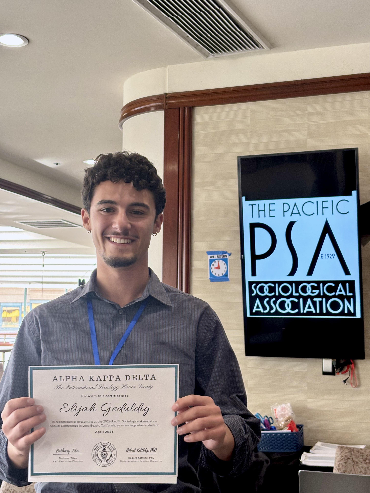
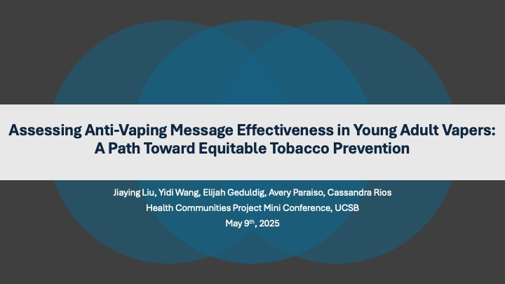
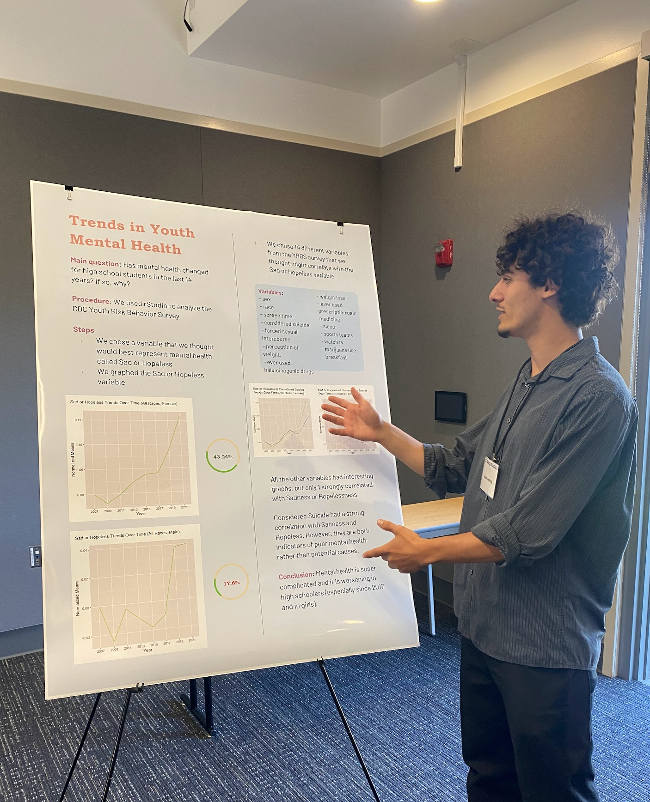
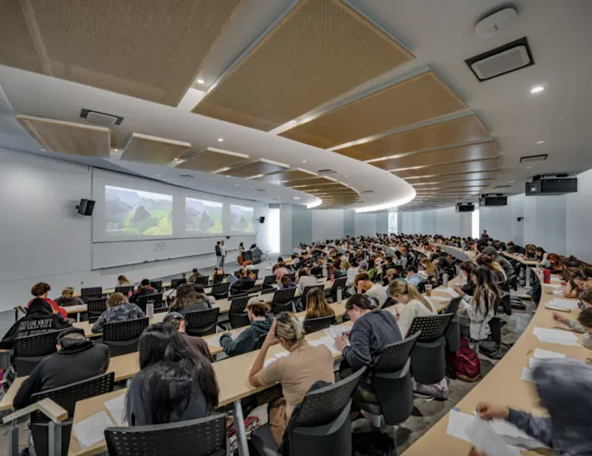
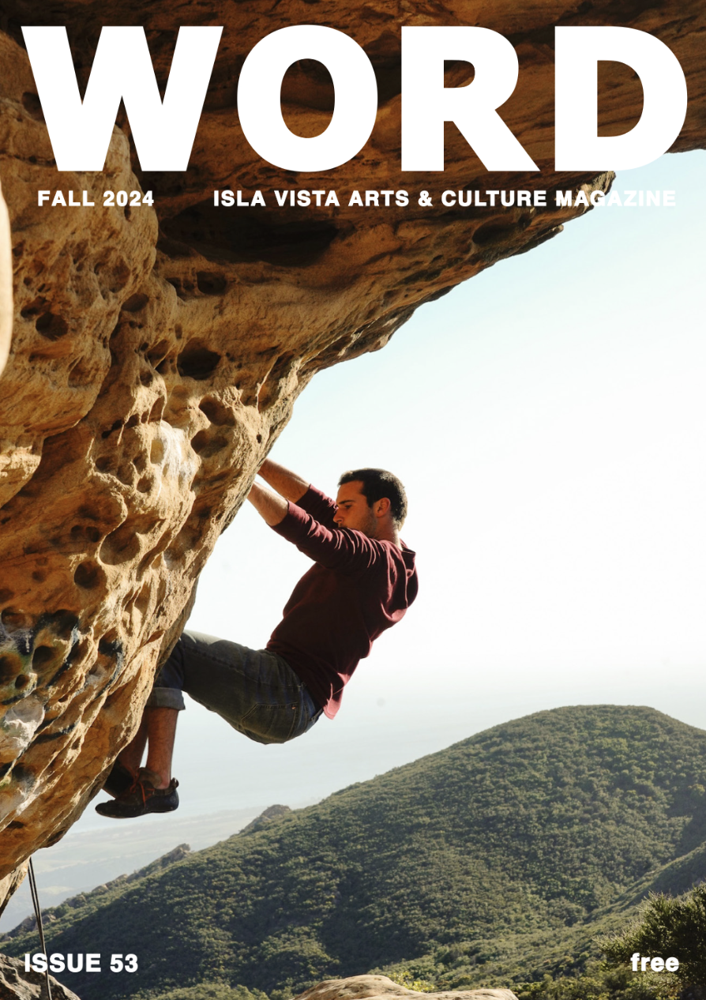
In each of the following roles, my job was to help people directly. Whether supporting children with autism in developing the tools they need to navigate the world, mentoring teenagers through service work with unhoused communities, or getting a group of strangers into the wilderness for the first time, I am someone who brings both professional dedication and genuine care to my work.
Elijah is a deeply compassionate and skilled worker whose dedication to care, emotional support, and meaningful programming made a significant impact on our program.
He brings strong mastery of all counselor roles, fostering deep connections with campers, especially those in need of extra support, through patience, creativity, and empathy.
Elijah's calming presence, emotional intelligence, and musical facilitation added so much value to the campers experience and our team.”
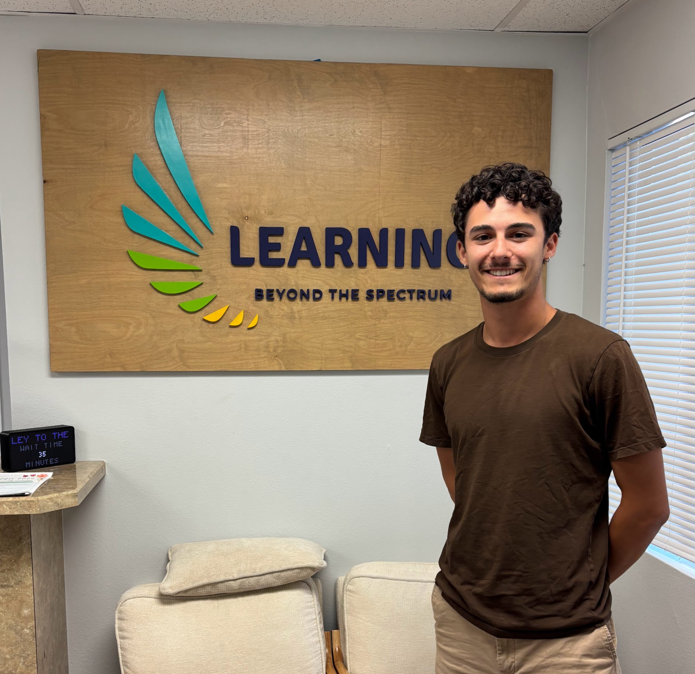
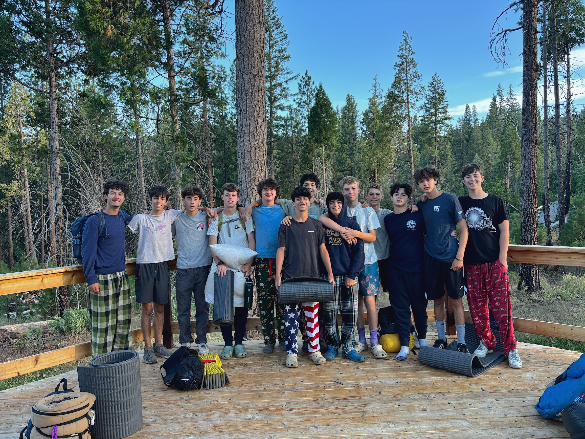
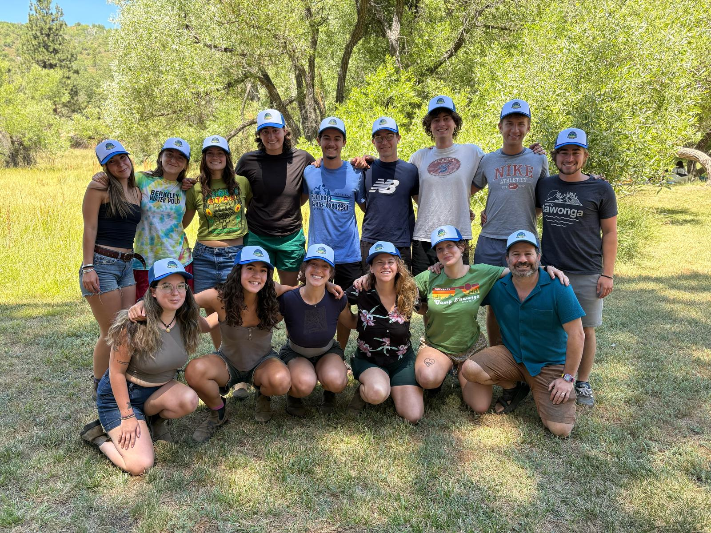
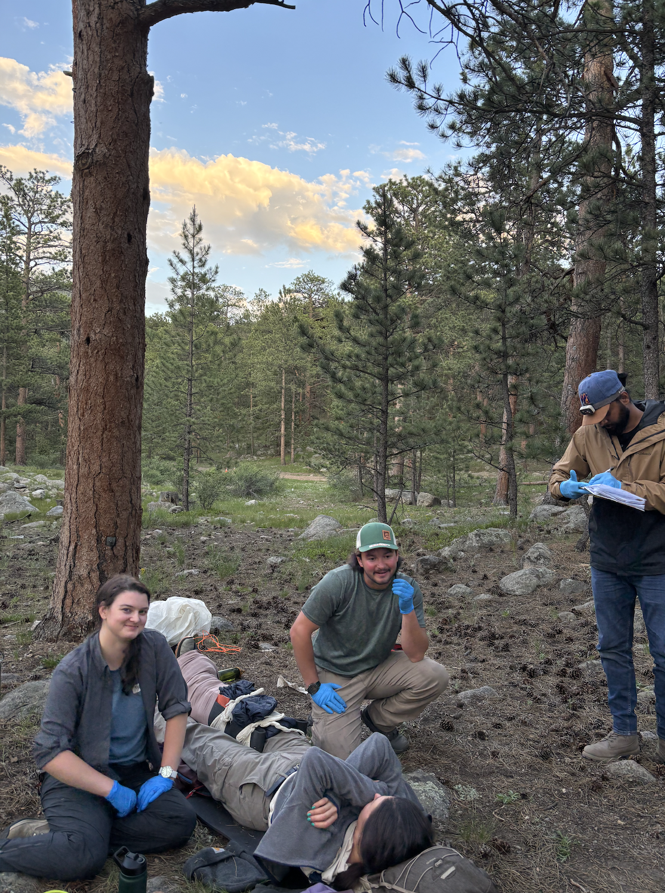
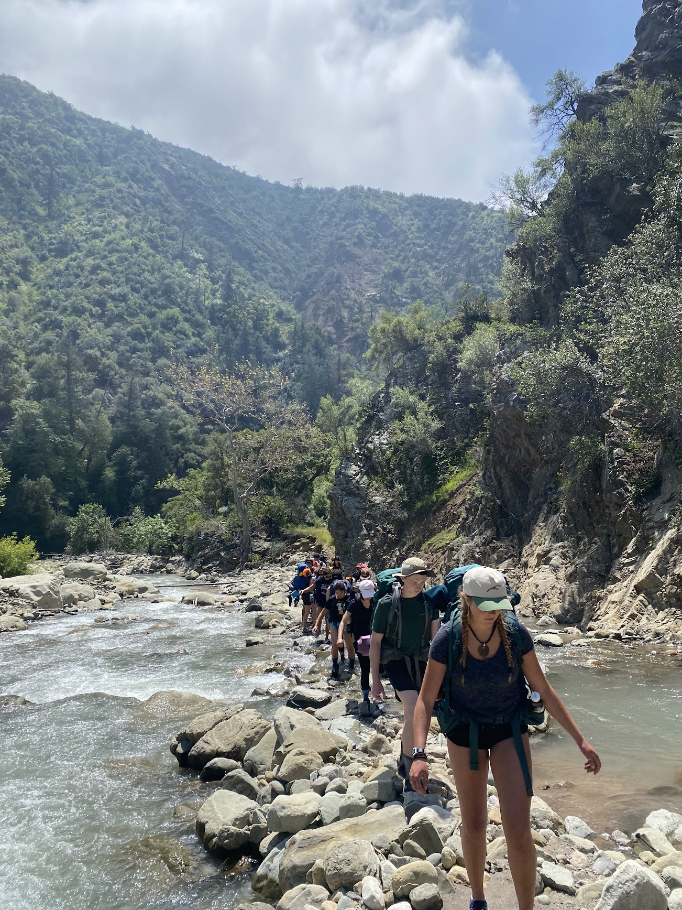
Throughout everything else on this page, music has always been there, and over the last few years it's grown from a passion into a profession I'm actively building, one that has already led to award recognition and ongoing collaborations with working filmmakers and musicians. From scoring films, to writing, producing, and releasing my own music, to hosting a radio show, I've built a genuinely varied body of work and I'm just getting started.
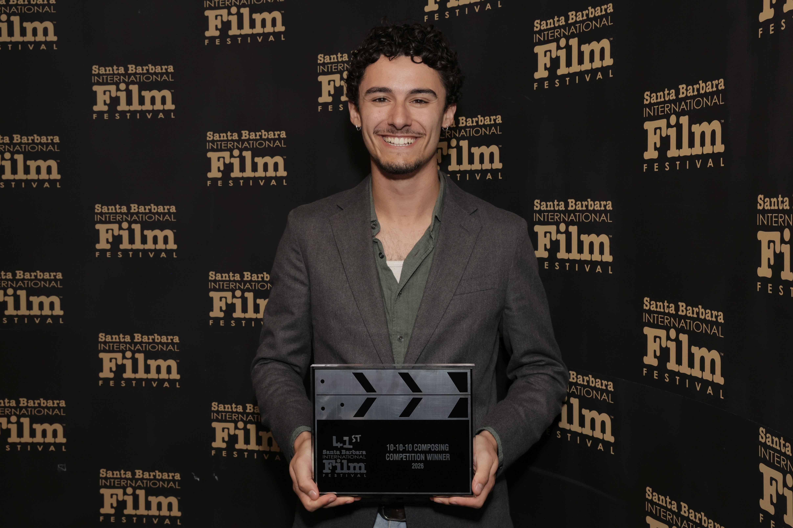
Composed the original score for "A Cure for Humanity," a short film created for the Santa Barbara International Film Festival's 10-10-10 program, which pairs ten screenwriters, ten directors, and ten composers to create and compete. Working closely with director Marine through extensive spotting sessions, I developed two original themes and composed variations of each to match the emotional beats of each scene. Crafted in Logic with a live pianist performing my compositions throughout, the score aimed for an unsettled sound inspired by Jonny Greenwood. At the Arlington Theater premiere, with a packed house and a red carpet, Marine won Best Director and I won the first ever 10-10-10 Best Composer award, one of my proudest achievements.
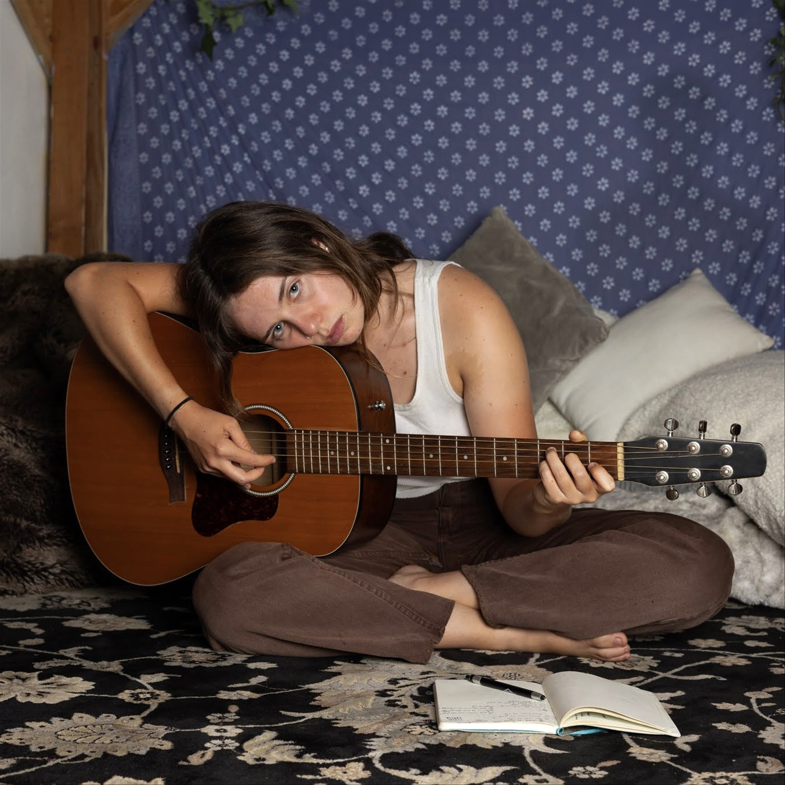
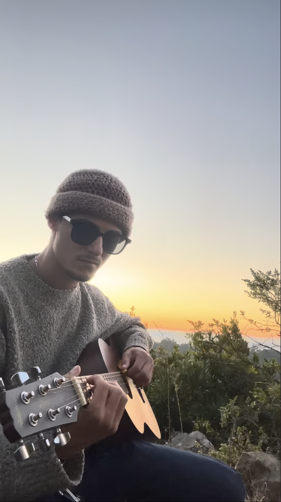
Follow along for new releases, performances, and projects.
@elijah_skye_music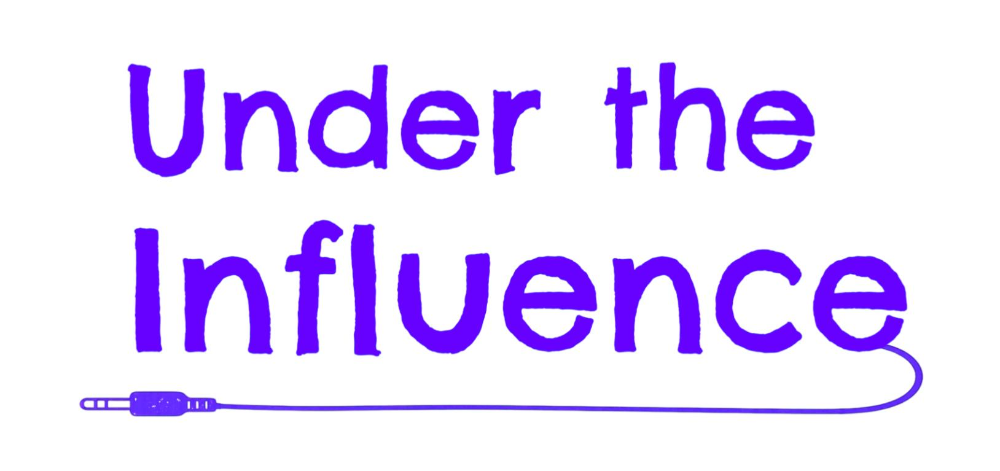